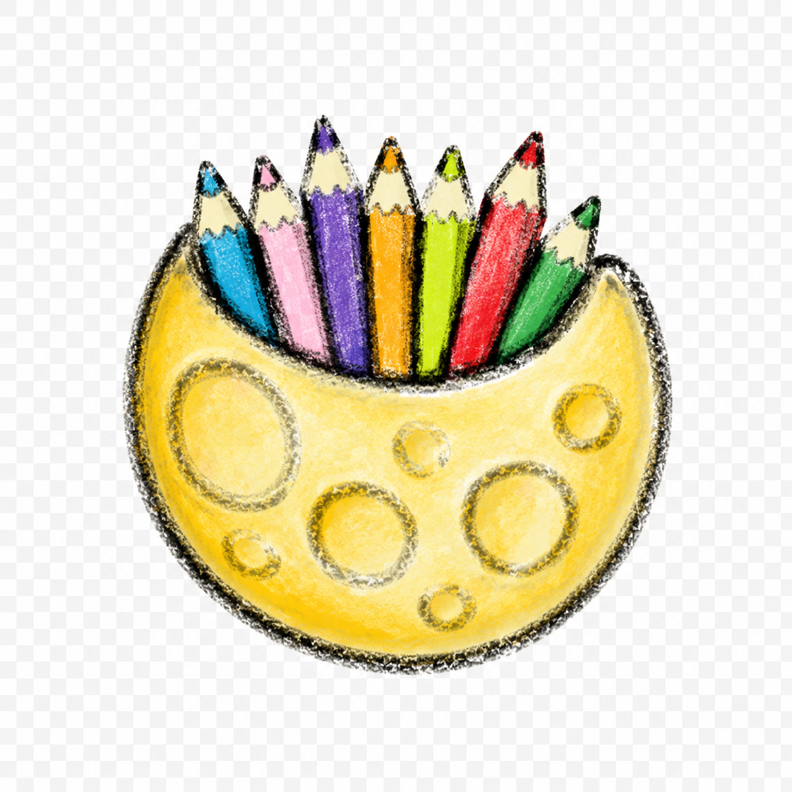
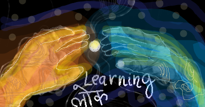
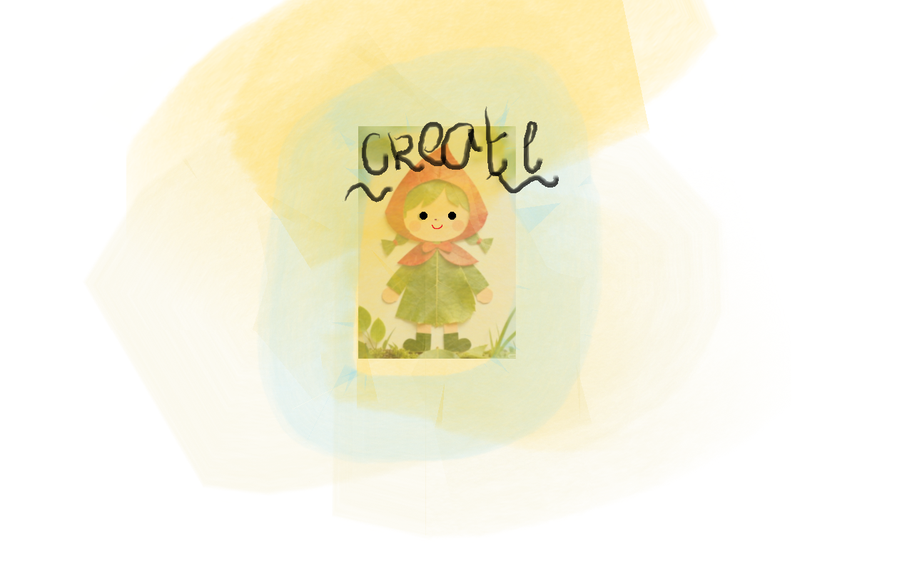
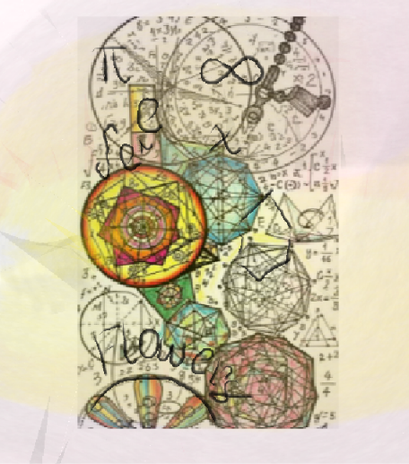
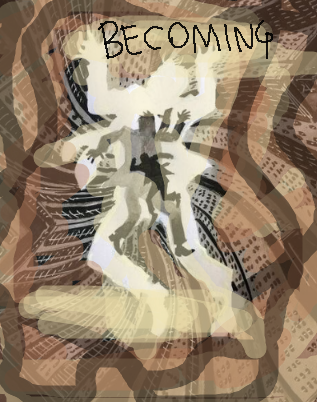
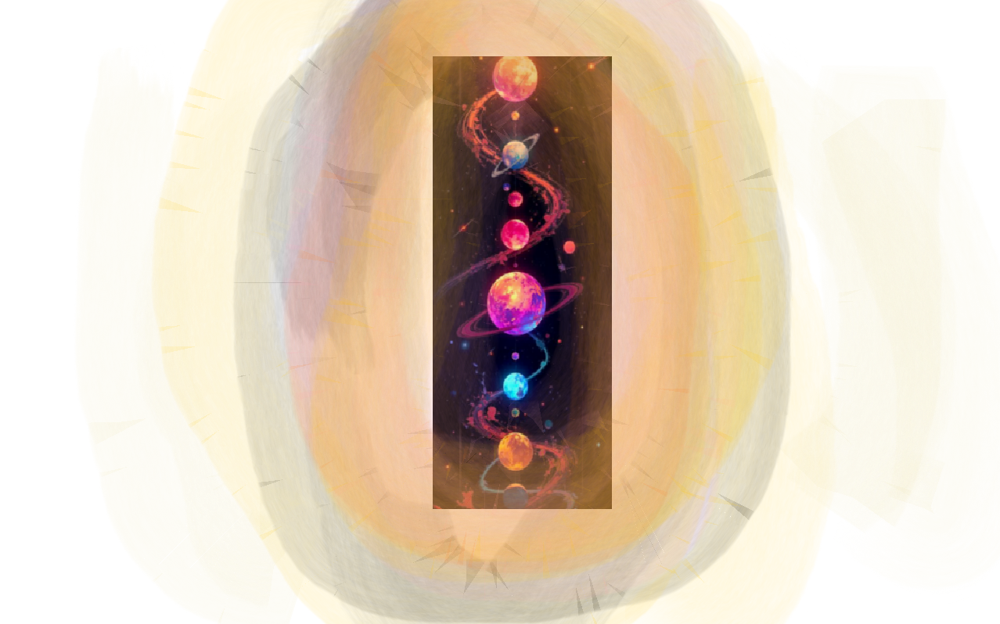

A sip
Learn one thing.

JIGYASAVERSE Curiosity lives here
JIGYASAVERSE • LEARNING LOK
Five worlds. Eighteen pathways. No pressure to know exactly where you are going.
Start with whatever makes you curious enough to click.
BEFORE YOU CHOOSE
You might enter through mathematics and somehow end up fascinated by music, as it has rhythmns and patterns that help you understand maths or even design better! (You will never know where it will take you!) You might begin with medicine and discover design, history or engineering.
Fantastic!
The worlds below organise knowledge. They do not put walls around it, make sure you also don't cage yourself with the way of thinking ^v^
CHOOSE YOUR ENTRY POINT
THE FIVE LEARNING WORLDS
Each world contains pathways, resources, questions and places to begin.

01बढ़ते मन · BADHTE MAN
Learning changes as we grow. Explore childhood, school years and the becoming an adult.

02ब्रह्मांड की लय · BRAHMAND KI LAY
Numbers. Cells. Machines. Codes. Algorithms Forces. Systems. Explore the patterns hiding underneath almost everything and understand when it becomes an outlier.
 03
03
मानव कथाएँ और अभिव्यक्ति
Humans have always painted, argued, written, performed, remembered and told stories. Enter to find out! (You may be able to share some of your stories too!)

04जीवन, कर्म और प्रभाव
Knowledge eventually meets the real world. Build something. Care for someone. Solve a problem. Make yourself useful.

05ज्ञान और नेतृत्व · GYAAN AUR NETRITVA
Some questions need years. Some ideas need teachers. Some discoveries need people willing to go further.
THE KNOWLEDGE RIVER
Take what you need today. Come back when another question finds you.
STILL DON'T KNOW WHICH WORLD?